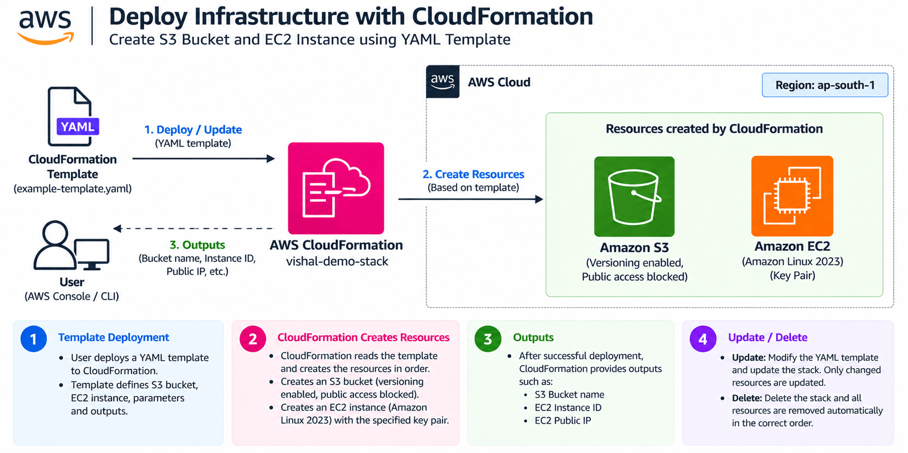
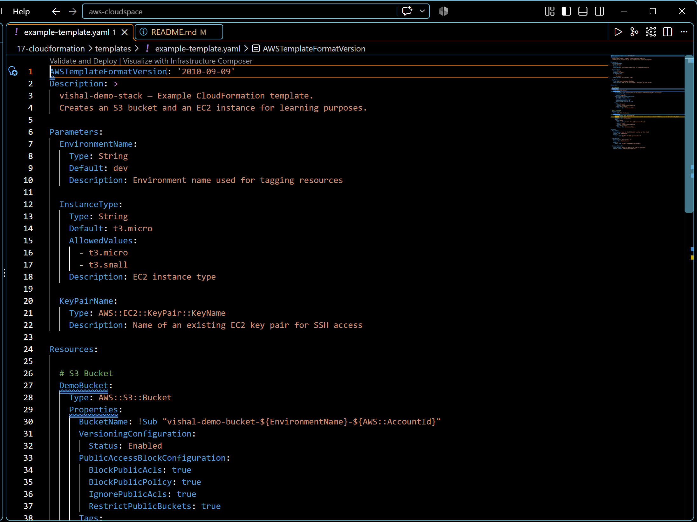
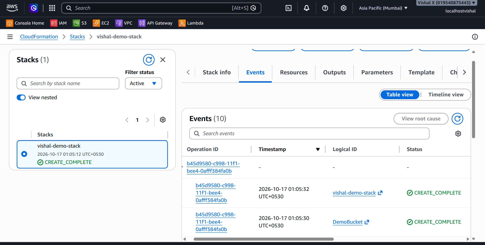
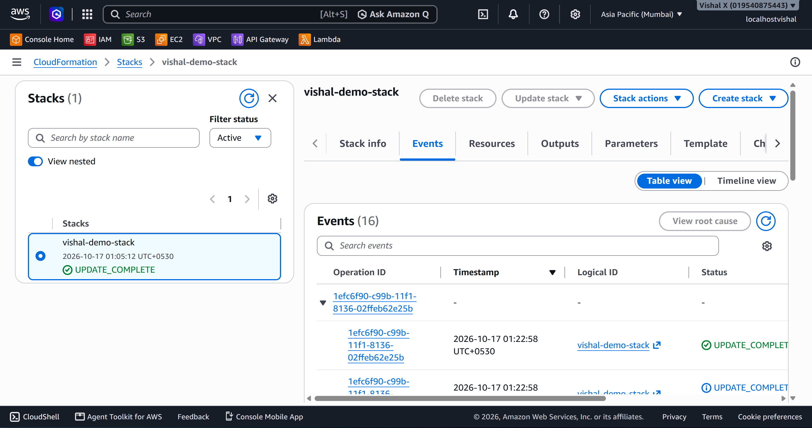
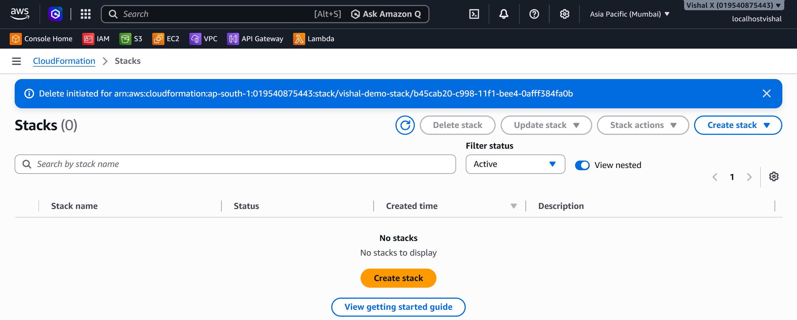

Deploy Infrastructure with CloudFormation
Seventeenth project. Infrastructure as Code — wrote a YAML template, deployed it as a CloudFormation stack, updated it, then deleted the whole stack in one action. No console clicking.
What I built
A CloudFormation stack that creates an S3 bucket and an EC2 instance from a YAML template. Deployed it, updated it with a change, then deleted the whole thing in one action — all resources gone cleanly.

Why CloudFormation
Every project before this involved clicking through the console. That works for learning but doesn't scale — it's slow, error-prone, and hard to repeat exactly. CloudFormation flips that. The infrastructure is in a file, stored in version control, deployed the same way every time. This is how real AWS environments are managed.
Services used
| Service | What I used it for |
|---|---|
| CloudFormation | Reads the YAML template and creates/manages the AWS resources |
| S3 | Created as a resource by the template |
| EC2 | Created as a resource by the template |
Resources I created
| Resource | Value |
|---|---|
| Region | ap-south-1 |
| Stack name | vishal-demo-stack |
| Template | templates/example-template.yaml |
Steps
1. Reviewed the CloudFormation template
The template is already in templates/example-template.yaml in this project folder. Open it in any text editor (VS Code, Notepad, etc.) and review the structure before deploying.
The template defines: - An S3 bucket with versioning enabled and public access blocked - An EC2 instance using the latest Amazon Linux 2023 AMI - Parameters for environment name, instance type, and key pair name - Outputs that display the bucket name, instance ID, and public IP after deployment
One thing to check before deploying: the template requires a KeyPairName parameter — make sure you have an existing key pair in ap-south-1. You can check under EC2 → Key Pairs.

2. Created the stack
- Open the CloudFormation console
- Click Stacks → Create stack → With new resources (standard)
- On the Specify template page:
- Prepare template: Upload a template file
- Click Choose file → select
templates/example-template.yaml - Click Next
- Stack name:
vishal-demo-stack - Configure any parameters defined in the template → click Next
- Stack options: leave defaults → click Next
- If the template creates IAM resources, tick I acknowledge that AWS CloudFormation might create IAM resources
- Click Submit
Watch the Events tab — CloudFormation creates each resource in order. When done, the stack status changes to CREATE_COMPLETE.

3. Updated the stack
- Modify the template locally (e.g. add a tag to the S3 bucket)
- CloudFormation → Stacks → click
vishal-demo-stack→ Update - Select Replace current template → upload the modified template → Next
- Parameters page: leave as is → Next
- Stack options: leave defaults → Next
- On the Review page, scroll down to the Change set preview section — this shows exactly what will be added, modified, or removed before anything happens
- Click Submit
CloudFormation creates a change set and executes it automatically. Watch the Events tab — only the changed resources are updated, not a full rebuild.

4. Deleted the stack
- CloudFormation → Stacks → tick
vishal-demo-stack→ Delete → Delete stack
CloudFormation deletes all resources in the correct order. When finished, the stack disappears from the list.

Screenshots
| # | File | Description |
|---|---|---|
| 01 | screenshots/01-template.png |
CloudFormation template open in editor |
| 02 | screenshots/02-stack-created.png |
Stack showing CREATE_COMPLETE with resources listed |
| 03 | screenshots/03-stack-updated.png |
Stack showing UPDATE_COMPLETE after template change |
| 04 | screenshots/04-stack-deleted.png |
CloudFormation stacks list with the stack removed |
Commands
Things that can go wrong
| Problem | What caused it | How I fixed it |
|---|---|---|
| ROLLBACK_COMPLETE | Resource creation failed | Checked Events tab for the specific error message |
| IAM acknowledgment required | Template creates IAM resources | Ticked the IAM acknowledgment checkbox |
| Stack stuck in DELETE_FAILED | A resource has a dependency | Manually deleted the blocking resource, then retried |
| Template validation error | YAML syntax error | Used aws cloudformation validate-template to check |
Security considerations
- CloudFormation execution role should only have permissions to create the resources in the template
- Enable termination protection on production stacks
- Don't put secrets or credentials in templates — use AWS Secrets Manager or Parameter Store
Cost
CloudFormation itself is free. The resources it creates (EC2, S3) incur normal costs. Delete the stack after the exercise to remove all resources and stop charges.
What I learned
- Infrastructure as Code means the infrastructure is defined in a file, not in console clicks
- A stack manages all resources as a unit — create, update, and delete together
- Change sets let me preview what will change before applying an update
- CloudFormation handles resource dependencies automatically — it knows the right creation order
- Deleting a stack removes all its resources cleanly in one action